شبنم رضاپور
کسی که PDFها را راضی کرد محتوایشان را بیکموکاست لو بدهند.
این جزوه با استفاده از جزوهساز پاپیروس و به صورت خودکار تولید شده است. ممکن است شامل خطا یا برداشت نادرست باشد و نیازمند بررسی و بازبینی مجدد است.
اندامهای لنفاوی به دو گروه اولیه و ثانویه تقسیم میشوند. این جلسه بر مغز استخوان و تیموس، بهعنوان اندامهای لنفاوی اولیه، و مسیر بلوغ و گردش لنفوسیتها تمرکز دارد. برای دنبالکردن مسیر سلولها، بهاختصار به اندامهای ثانویه نیز پرداخته میشود. جزئیات بیشتر دربارهٔ MALT و اندامهای ثانویه در جلسهٔ بعد و جزئیات تکامل B و T در جلسههای مربوط به آنها بررسی خواهد شد.
اندامهای لنفاوی به دو گروه تقسیم میشوند:
اندامهای اولیه محل تولید و بلوغ لنفوسیتها هستند و فعالیت آنها در تولید و آمادهسازی لنفوسیتها به آنتیژن وابسته نیست. در مقابل، لنفوسیت بالغ در اندامهای محیطی با آنتیژن برخورد میکند و پاسخ ایمنی آغاز میشود. بنابراین، اندام اولیه لنفوسیت را تولید و آماده میکند و اندام ثانویه محل برخورد آن با آنتیژن و آغاز پاسخ ایمنی است.
| ویژگی | اندامهای لنفاوی اولیه | اندامهای لنفاوی ثانویه یا محیطی |
|---|---|---|
| نمونهها | مغز استخوان و تیموس | گره لنفاوی، طحال و بافتهای لنفاوی مرتبط با مخاط و پوست |
| نقش مطرحشده در درس | تولید، آمادهسازی و بلوغ لنفوسیتها | برخورد لنفوسیت بالغ با آنتیژن و آغاز پاسخ ایمنی |
| وابستگی فعالیت به آنتیژن | تولید و آمادهسازی لنفوسیتها به آنتیژن وابسته نیست | محل برخورد با آنتیژن و آغاز پاسخ ایمنی |
آشنایی با اندامهای لنفاوی اولیه کمک میکند بدانیم لنفوسیتهای B و T کجا تولید میشوند، پس از بلوغ به کجا میروند و کجا با آنتیژن برخورد میکنند. برای دنبالکردن مسیر سلولها، در این جلسه بهاختصار به اندامهای ثانویه نیز اشاره میشود
بدن برای دفاع اختصاصی به میلیاردها لنفوسیت با گیرندههای متنوع نیاز دارد. همهٔ ردههای سلولهای خونی از سلول بنیادی خونساز (hematopoietic stem cell; HSC) منشأ میگیرند. در مغز استخوان، HSC به ردههای پیشساز تقسیم میشود؛ از جمله پیشساز لنفوئیدی مشترک (common lymphoid progenitor; CLP) و پیشساز میلوئیدی مشترک (common myeloid progenitor; CMP).
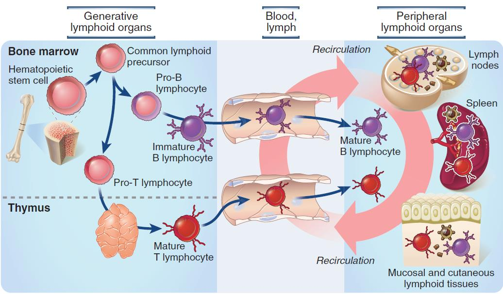
تصویر 2| ردهٔ پیشساز | مسیرها و سلولهای ذکرشده |
|---|---|
| میلوئیدی | گرانولوسیتها، اریتروسیتها و مونوسیتها؛ مونوسیتها میتوانند به ماکروفاژها مرتبط شوند. گلبول قرمز و پلاکت نیز در ردههای خونی وجود دارند. |
| لنفوئیدی | سلولهای B، سلولهای T و سلولهای NK |
| پیشسازهای دیگرِ نشاندادهشده در نمودارها | پیشسازهای ILC، mast cell، megakaryocyte، erythroid، granulocyte و monocyte؛ همچنین Pro-B cell، Pre-B cell، Pro-T cell، Pre-T cell، Pro-NK cell، Pro-ILC و monoblast |
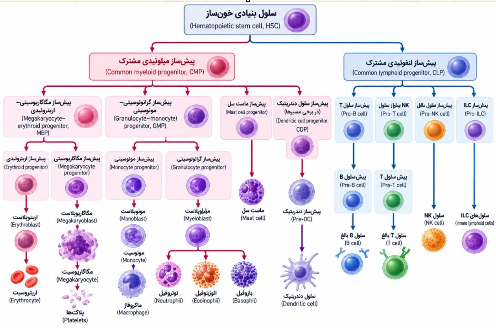
تصویر 15در مسیر لنفوسیتها، HSC در مغز استخوان به پیشساز لنفوئیدی مشترک میرسد و سپس مسیرهای Pro-B و Pro-T شکل میگیرند. بهکاربردن Pro-B cell یا Pro-B lymphocyte و نیز Pro-T cell یا Pro-T lymphocyte به یک مسیر پیشساز B یا T اشاره دارد.
| ویژگی مسیر | مسیر T | مسیر B |
|---|---|---|
| محل آغاز مسیر | Pro-T cell در مغز استخوان تولید میشود | بلوغ در مغز استخوان آغاز میشود |
| جابهجایی پس از مراحل اولیه | Pro-T cell بسیار نابالغ از مغز استخوان خارج میشود و وارد تیموس میگردد | سلول تا مرحلهٔ immature B cell در مغز استخوان تکامل مییابد و سپس از راه خون خارج میشود |
| محل ادامه یا مرحلهٔ نهایی بلوغ | مراحل بعدی تکامل و بلوغ نهایی T cell در تیموس رخ میدهد | مرحلهٔ نهایی تبدیل immature B cell به mature B cell در طحال انجام میشود |
| پس از بلوغ | لنفوسیت بالغ به اندامهای محیطی میرود | لنفوسیت بالغ به اندامهای محیطی میرود |
هر یک از اندامهای محیطی آنتیژنهایی را دریافت میکنند که از مسیر ویژهای وارد بدن شدهاند:
| محل ورود یا مسیر آنتیژن | محل دریافت یا عرضه |
|---|---|
| خون | طحال |
| لنف | گره لنفاوی |
| سطوح مخاطی | بافتهای لنفاوی مخاطی |
شکل، گردش لنفوسیتها (recirculation) را میان خون، گرههای لنفاوی، طحال و بافتهای لنفاوی مخاطی نشان میدهد. لنفوسیتها پیوسته وارد اندامهای لنفاوی ثانویه میشوند و دوباره به خون برمیگردند؛ این گردش امکان جستوجوی آنتیژن را فراهم میکند.
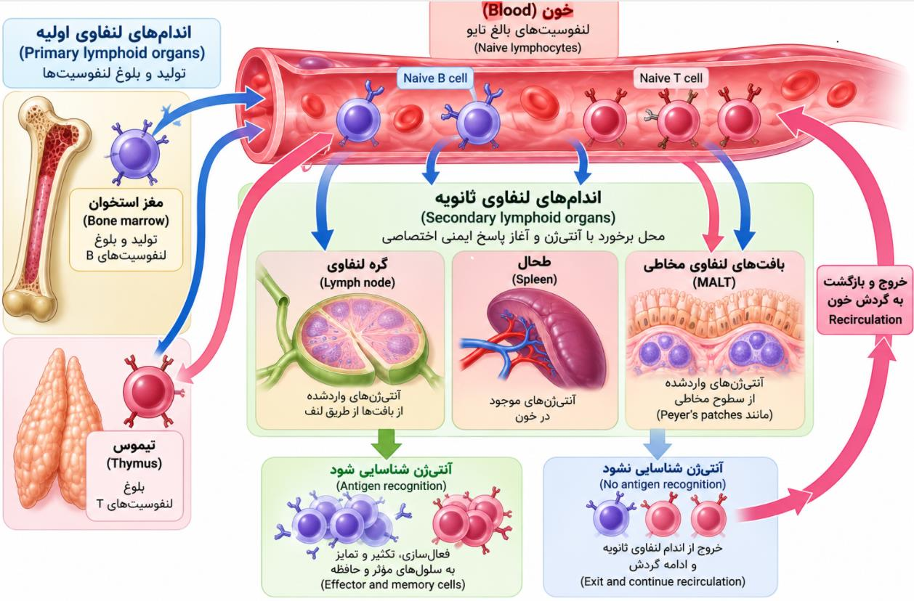
تصویر 3لنفوسیتها فقط آنتیژن اختصاصی گیرندهٔ خود را شناسایی میکنند؛ هر چیزی که در مسیرشان قرار بگیرد به آنها متصل نمیشود. اختصاصیت گیرنده، اپیتوپ و پاراتوپ پیشتر مطرح شدهاند.
ممکن است لنفوسیتی وارد گره لنفاوی، طحال یا بافت لنفاوی مخاطی شود، اما در آن نوبت با آنتیژن اختصاصی خود روبهرو نشود. در این صورت از آن اندام خارج میشود و به recirculation ادامه میدهد تا دوباره به جستوجو بپردازد. اگر آنتیژن اختصاصی شناسایی شود، سلول فعال و تکثیر میشود و به سلولهای اجرایی (effector) و سلولهای حافظه (memory) تمایز مییابد. برای نمونه، سلولهای T اجرایی را T effector و سلولهای B اجرایی را B effector مینامند. (در بعضی کتابها effector را «مؤثر» ترجمه میکنند) سلولهای memory باقی میمانند و در مواجههٔ بعدی با همان عامل میکروبی میتوانند سریع پاسخ دهند. سلولهایی که هنوز آنتیژن اختصاصی خود را شناسایی نکردهاند، به recirculation ادامه میدهند.
| وضعیت شناسایی آنتیژن | سرنوشت لنفوسیت |
|---|---|
| آنتیژن اختصاصی شناسایی نمیشود | سلول از اندام لنفاوی ثانویه خارج میشود و به recirculation ادامه میدهد. |
| آنتیژن اختصاصی شناسایی میشود | سلول فعال و تکثیر میشود و به سلولهای effector و memory تمایز مییابد. |
| پس از تمایز به memory | سلولهای memory باقی میمانند و در مواجههٔ بعدی با همان عامل میکروبی میتوانند سریع پاسخ دهند. |
به لنفوسیت بالغی که هنوز با آنتیژن اختصاصی خودش مواجه نشده و فعال نشده است، لنفوسیت نایو (naive lymphocyte) میگویند. بنابراین، یک B cell یا T cell میتواند بالغ باشد، اما همچنان naive بماند؛ یعنی هنوز آنتیژن اختصاصی خود را نشناخته باشد. واژهٔ naive اصطلاح این مرحله است و در توضیح کلاس، معادل آن «بِکر» دانسته شد.
نمودار کلی، خون، اندامهای لنفاوی اولیه و ثانویه، لنفوسیتهای بالغ نایو و ورود آنتیژنها را به تفکیک مسیر نشان میدهد:
خونسازی در دورهٔ جنینی ابتدا در کیسهٔ زرده آغاز میشود، سپس کبد و تا حدی طحال مطرح میشوند و پس از آن مغز استخوان محل خونسازی میشود.
| محل خونسازی در دورهٔ جنینی | زمان مطرحشده |
|---|---|
| کیسهٔ زرده | حدود هفتهٔ سوم |
| کبد و تا حدی طحال | حدود هفتهٔ ششم یا نزدیک دو ماه |
| مغز استخوان | حدود ماه چهارم تا پنجم |
پس از تولد، همهٔ استخوانهای بدن نوزاد میتوانند خونسازی کنند و مغز استخوان قرمز دارند. با افزایش سن، بخشی از مغز قرمز به مغز زرد (yellow marrow) تبدیل میشود؛ این تغییر بهویژه در تنهٔ استخوانهای بلند، مانند استخوان ران و بازو، رخ میدهد.
در بزرگسالان:
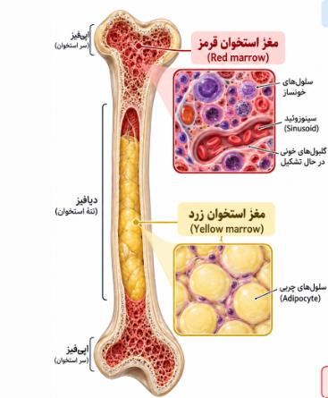
| ویژگی | مغز قرمز (red marrow) | مغز زرد (yellow marrow) |
|---|---|---|
| ترکیب غالب | بیشتر سلولهای خونساز | سلولهای چربی |
| فعالیت خونسازی | زیاد | کم |
| محلهای ذکرشده در بزرگسالان | استخوانهای پهن و انتهای استخوانهای بلند، از جمله نواحی پروگزیمال و اپیفیز | عمدتاً تنهٔ استخوانهای بلند |
| کارکرد ذکرشده | تولید خون | بیشتر ذخیرهٔ چربی و پشتیبانی محدود؛ در شرایط خاص قابلیت تبدیل دارد |
در افراد بالغ و مسن، خونسازی بیشتر در استخوانهای پهن و بخشهای پروگزیمال استخوانهای بلند انجام میشود.
در شکل مغز استخوان، مغز قرمز (red marrow) و مغز زرد (yellow marrow) نشان داده شدهاند.
تیموس پشت جناغ (sternum)، بالای قلب و بین دو ریه قرار دارد و جناغ در جلوی آن است.
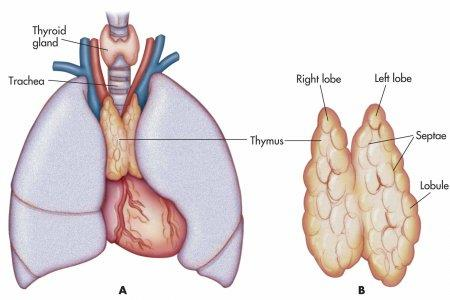
تصویر 5تیموس دو لوب بزرگ دارد و سطح آن را کپسولی از بافت همبند متراکم میپوشاند. این کپسول نسبتاً نازک و در مقایسه با کپسول گره لنفاوی و طحال نازکتر است. تیغههایی از کپسول وارد لوبها میشوند و آنها را به لوبولهای متعدد تقسیم میکنند. این تیغهها septa نام دارند و بعضی کتابها آنها را trabeculae مینامند؛ در اینجا هر دو اصطلاح به همان تیغههای منشأگرفته از کپسول اشاره دارند. در بعضی کتابهای ایمونولوژی بیشتر از septa و در بعضی کتابها، بیشتر از trabeculae استفاده میشود. عروق خونی و اعصاب نیز از مسیر این تیغهها وارد تیموس میشوند و به خونرسانی و تغذیهٔ بافت کمک میکنند.
| ساختار یا ویژگی تیموس | توضیح |
|---|---|
| لوبها | دو لوب بزرگ |
| کپسول | کپسولی از بافت همبند متراکم؛ نسبتاً نازک و نازکتر از کپسول گره لنفاوی و طحال |
| تیغهها | از کپسول وارد لوبها میشوند و لوبها را به لوبولهای متعدد تقسیم میکنند |
| اصطلاح تیغهها | septa؛ بعضی کتابها trabeculae میگویند. در اینجا هر دو اصطلاح به همان تیغههای منشأگرفته از کپسول اشاره دارند |
| مسیر عروق و اعصاب | عروق خونی و اعصاب از مسیر تیغهها وارد تیموس میشوند و به خونرسانی و تغذیهٔ بافت کمک میکنند |
هر لوبول تیموس دو ناحیه دارد: قشر (cortex) و مدولا (medulla). قشر در تصویر تیرهتر است، زیرا تراکم لنفوسیتها در آن بیشتر است.
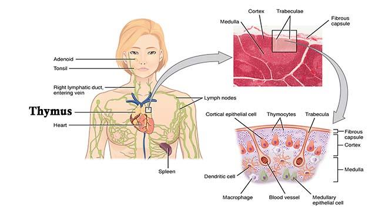
تصویر 8در قشر، مراحل اولیهٔ تکامل Pro-T cellها یا thymocyteها رخ میدهد:
| مرحله یا ناحیه | ویژگی سلولها |
|---|---|
| مراحل اولیه در قشر | thymocyteها ابتدا double negative هستند؛ CD4 و CD8 ندارند. |
| مرحلهٔ بعدی | double positive میشوند و هم CD4 و هم CD8 را دارند؛ CD4 با T helper و CD8 با T cytotoxic مرتبط است. |
| پس از مراحل انتخاب و تکامل، در مدولا | single positive میشوند؛ یا CD4-positive T cell هستند یا CD8-positive T cell. سپس میتوانند وارد خون شوند و در اندامهای ثانویه با آنتیژن برخورد کنند. |
همهٔ thymocyteهای نابالغ از تیموس خارج نمیشوند. حدود ۱ تا ۲ درصد از سلولهای نابالغی که وارد تیموس میشوند، از آن خارج شده و وارد خون محیطی میشوند. تکامل، آموزش و انتخاب در تیموس باعث میشود تعداد زیادی از سلولها باقی نمانند؛ از جمله سلولهایی که به آنتیژنهای خودی واکنش نشان میدهند (autoreactive) ممکن است از بین بروند.
در قشر، علاوه بر thymocyteها، سلولهای اپیتلیال کورتیکال نیز وجود دارند. این سلولها cytokine مهم Interleukin-7 را ترشح میکنند که در بلوغ و تکامل T cell نقش مهمی دارد. تعامل میان سلولهای اپیتلیال کورتیکال و thymocyteها، و نیز cytokineهایی از جمله Interleukin-7، در تکامل thymocyteها اهمیت دارد.
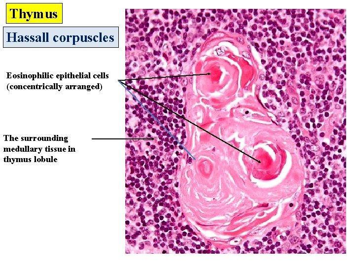
در مدولا، thymocyteها، سلولهای دندریتیک، ماکروفاژها، سلولهای اپیتلیال مدولاری و اجسام هاسال (Hassall corpuscles یا Hassall’s corpuscles) وجود دارند. اجسام هاسال بهشکل لایهها و حلقههای فشرده و متحدالمرکز، شبیه لایههای پوست پیاز، دیده میشوند. در برچسب تصویر از eosinophilic epithelial cells و ساختارهای concentric نیز نام برده شده است.
دربارهٔ منشأ اجسام هاسال گفته شد که احتمالاً بقایای سلولهای اپیتلیال مدولاریِ در حال تخریباند. بعضی کتابها احتمال دادهاند thymocyteهای در حال تخریب نیز در تشکیل آنها نقش داشته باشند، اما نظر مدرس بیشتر به منشأ اپیتلیالی متمایل بود.
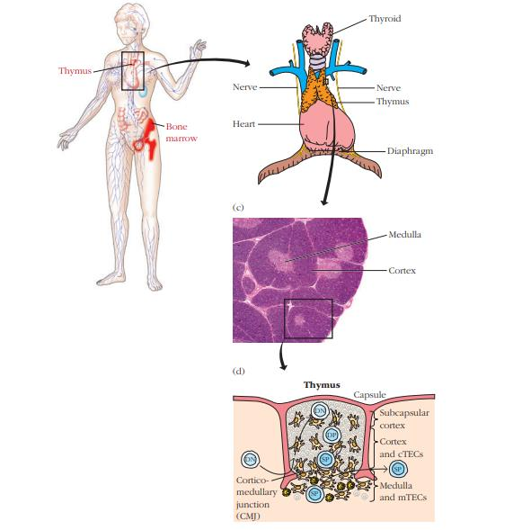
تصویر 9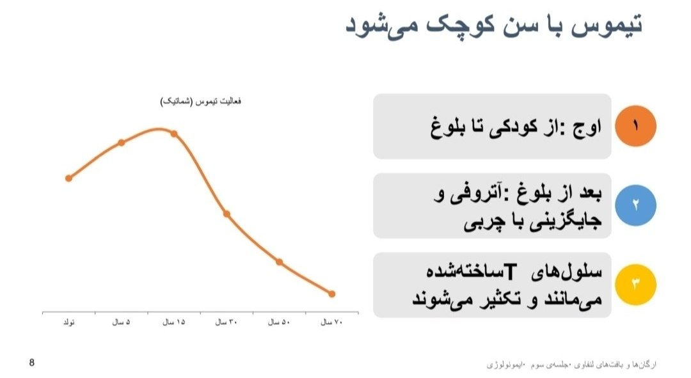
فعالیت تیموس با سن تغییر میکند. نمودار اسلاید اوج فعالیت را از کودکی تا بلوغ نشان میدهد و سپس آتروفی و جایگزینی با چربی را نمایش میدهد؛ سلولهای T ساختهشده باقی میمانند و تکثیر میشوند. در توضیح شفاهی گفته شد تیموس از نظر اندازه و توانایی تولید thymocyte حوالی ۱۹ تا ۲۰ سالگی به اوج میرسد و پس از بلوغ بهتدریج کوچک میشود. همچنین گفته شد از حدود هفتادسالگی به بعد، بیشتر سلولهایی که قبلاً تکثیر شدهاند کار خود را انجام میدهند و تکثیر میشوند و تولید سلول توسط خود تیموس نزدیک به صفر میشود.
| منبع توضیح | گفتهٔ مربوط به اوج فعالیت تیموس |
|---|---|
| نمودار اسلاید | اوج فعالیت را از کودکی تا بلوغ نشان میدهد؛ سپس آتروفی و جایگزینی با چربی را نمایش میدهد. |
| توضیح شفاهی | اوج اندازه و توانایی تولید thymocyte حدود ۱۹ تا ۲۰ سالگی ذکر شده است. |
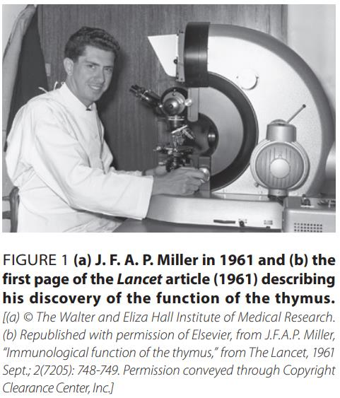
در سال ۱۹۶۱، Jacques Miller نقش حیاتی تیموس را در سیستم ایمنی نشان داد. پیش از آن، تیموس گاهی اندامی کماهمیت و حتی مضر تصور میشد و آن را با آپاندیس مقایسه میکردند. در توضیح کلاس گفته شد معلوم نیست واقعاً برداشتن تیموس به این دلیل انجام میشده یا نه؛ نظر مدرس این بود که بعید است اندامی در بدن کاملاً بیفایده باشد. آپاندیس نیز تا حدی مانند یک اندام لنفاوی ثانویه به بدن کمک میکند. لوزهها هم از نمونههای اندامهای لنفاوی ثانویهاند، هرچند بعضی کتابها کمتر به آنها اشاره میکنند. گاهی بهدلیل عفونتهای مکرر یا بزرگشدن لوزهها و احساس خفگی، پزشک برداشتن آنها را پیشنهاد میکند؛ در چنین شرایطی ممکن است لازم باشد میان دو وضعیت نامطلوب وضعیت نامطلوبتر انتخاب شود.
Miller با برداشتن تیموس موشهای نوزاد (neonatal thymectomy) دریافت که موشها به عفونتها حساستر میشوند، توانایی رد پیوند پوست را از دست میدهند و بسیاری از آنها میمیرند. بررسیها نشان داد نوعی از لنفوسیتها کاهش پیدا میکند و این یافتهها اهمیت ایمنی سلولی را نشان دادند؛ سلولهای T از ردههای اصلی این ایمنیاند.
در توضیح شفاهی همچنین گفته شد Miller متوجه شده بود موشها یک thymus گردنی اضافه نیز دارند که کمی متفاوت است و دربارهٔ دلیل وجود آن هنوز پژوهش میشود.
در سندرم دیجورج (DiGeorge syndrome)، در بازوی بلند کروموزوم ۲۲ (22q11.2) حذف رخ میدهد. بازوی بلند را q و بازوی کوتاه را p مینامند. در این ناحیه حدود سه میلیون جفتباز DNA و تقریباً ۳۰ تا ۴۰ ژن حذف میشود. ژنهای این ناحیه در رشد جنینی نقش دارند؛ یکی از ژنهای مهم TBX1 است، یک transcription factor که در تکامل تیموس، پاراتیروئید، قلب و ساختارهای صورت نقش دارد. بنابراین، مشکل اصلی صرفاً نداشتن یا درست کارنکردن تیموس نیست و حذف کروموزومی میتواند چندین دستگاه و ساختار را درگیر کند.
| بخش یا ژن | اطلاعات ذکرشده دربارهٔ سندرم دیجورج |
|---|---|
| محل حذف | بازوی بلند کروموزوم ۲۲؛ 22q11.2 |
| مقدار حذف | حدود سه میلیون جفتباز DNA و تقریباً ۳۰ تا ۴۰ ژن |
| ژن مهم ذکرشده | TBX1، یک transcription factor |
| ساختارهای مرتبط با نقش ژنهای این ناحیه | تیموس، پاراتیروئید، قلب و ساختارهای صورت |
| نکتهٔ کلی | حذف کروموزومی میتواند چندین دستگاه و ساختار را درگیر کند و مشکل صرفاً به تیموس محدود نیست. |
پیامدهای ممکن عبارتاند از:
cleft palate به معنی شکاف در سقف دهان و cleft lip به معنی شکاف در لب فوقانی است. این دو را نباید با هم اشتباه گرفت. در cleft lip ممکن است شکاف کام نیز وجود داشته باشد؛ در برخی افراد هر دو دیده میشوند و در برخی موارد فقط شکاف کام وجود دارد. در توضیح کلاس گفته شد شکاف لب در سندرم دیجورج کمتر شایع است و شکاف کام ممکن است بهتنهایی دیده شود. شدت و نوع تظاهرات به میزان حذف و نقص ایجادشده بستگی دارد.
| پیامد یا ساختار درگیر | تظاهر ذکرشده |
|---|---|
| تیموس | نقص تکامل یا عملکرد تیموس و استعداد به عفونتها |
| پاراتیروئید | اختلال پاراتیروئید و hypocalcemia |
| قلب | نقص قلبی |
| صورت | ناهنجاریهایی مانند cleft palate و cleft lip؛ شکاف لب در سندرم دیجورج کمتر شایع دانسته شد و شکاف کام ممکن است بهتنهایی دیده شود |
این بیماران ممکن است به عفونتهای مختلف مبتلا شوند و برای درمان آنها اقدام لازم باشد؛ از جمله، ممکن است پیوند مطرح شود. درمان در بحث نقصهای ایمنی بیشتر بررسی خواهد شد و این بیماری در درس ایمنی ۲ نیز بهتفصیل مطرح میشود.
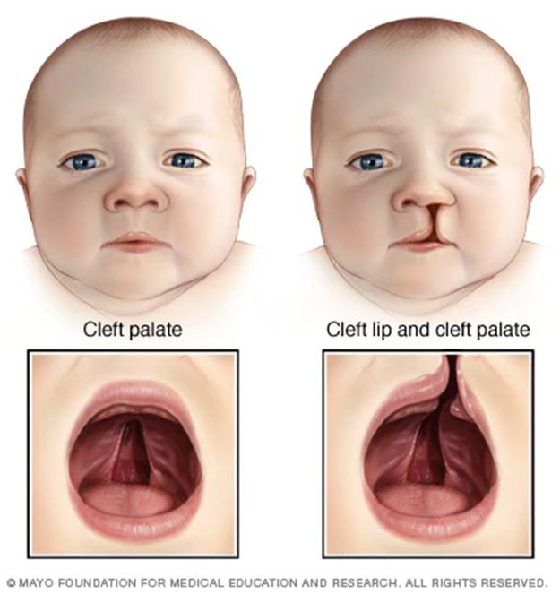
تصویر 11موش nude یا موش برهنه، موش بدون مو نیز نامیده میشود. در این موشها جهشی در transcription factor به نام FOXN1 وجود دارد. افزون بر نبود فولیکولهای مو و بیموشدن، تیموس نیز تکامل پیدا نمیکند. بنابراین، موش nude هم بدون مو است و هم تیموس تکامل یافته ندارد و بهعنوان مدل آزمایشگاهی کمبود T بهکار میرود.
| ویژگی موش nude | توضیح مطرحشده در درس |
|---|---|
| ژن یا عامل ذکرشده | جهش در transcription factor به نام FOXN1 |
| مو | فولیکولهای مو وجود ندارند و موش بیمو است |
| تیموس | تیموس تکامل پیدا نمیکند |
| کاربرد ذکرشده | مدل آزمایشگاهی کمبود T |
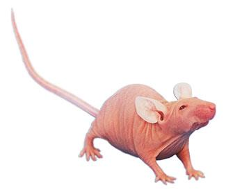
تصویر 12مسیر بلوغ B cell در اسلاید با مراحل Pro-B cell، Pre-B cell، Immature B cell و Mature naive B cell نشان داده شده است:
| مرحلهٔ B cell | رویداد یا ویژگی ذکرشده |
|---|---|
| Pro-B cell | بازآرایی ژنهای گیرنده آغاز میشود و سلول برای ساخت BCR آماده میشود. |
| Pre-B cell | زنجیرهٔ سنگین μ ساخته میشود. |
| Immature B cell | IgM سطحی بیان میشود و خودواکنشگری بررسی میشود؛ کنترل کیفیت اولیه است. |
| Mature naive B cell | IgM و IgD بیان میشوند و سلول به اندامهای محیطی خارج میشود. |
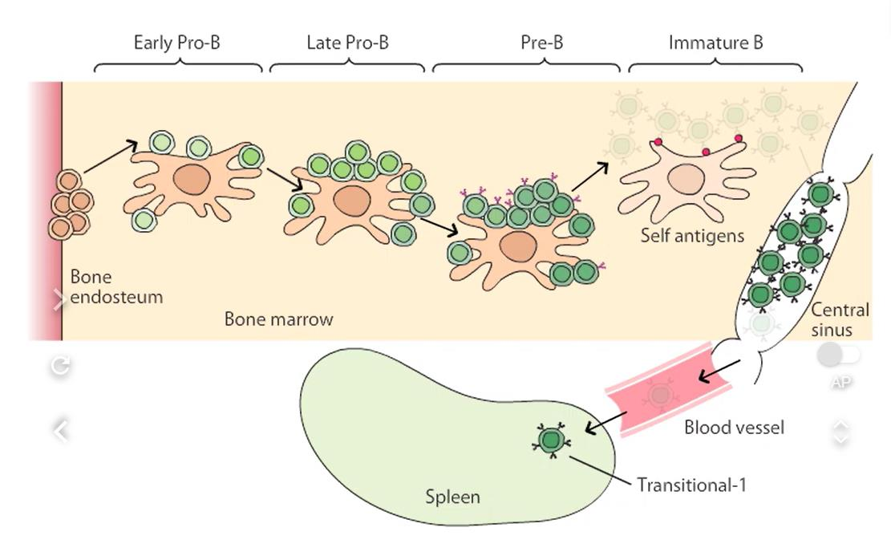
تصویر 14تحمل مرکزی (central tolerance) در این فرایند اهمیت دارد. اگر B cell آنتیژنهای خودی را بهشدت شناسایی کند، ممکن است حذف شود، گیرندهاش ویرایش شود یا غیرفعال شود. این فرایند خطر خودایمنی را کاهش میدهد.
| ویژگی | Immature B cell | Mature B cell |
|---|---|---|
| آنتیبادی سطحیِ ذکرشده | ممکن است بیشتر IgM سطحی داشته باشد | IgM و IgD دیده میشوند |
| بررسی مرتبط | خودواکنشگری بررسی میشود؛ کنترل کیفیت اولیه | در اسلاید بهعنوان مرحلهای با بیان IgM و IgD نشان داده شده است |
در توضیح شفاهی گفته شد روی immature B cell ممکن است بیشتر IgM سطحی وجود داشته باشد، درحالیکه روی mature B cell دو کلاس آنتیبادی IgM و IgD دیده میشود. توضیحات کاملتر دربارهٔ تکامل B cell، از جمله گیرندههای سلولها و تفاوت immature B cell و mature B cell، در جلسهٔ مربوط به تکامل سلولهای B ارائه خواهد شد. جزئیات تکامل B و T نیز به جلسههای اختصاصی موکول شد تا پس از آشنایی بیشتر با آنتیژن و آنتیبادی، بحث قابلدرکتر باشد.
| گروه | نمونهها | نقش در درس |
|---|---|---|
| اندامهای لنفاوی اولیه، زایا یا مرکزی | مغز استخوان و تیموس | تولید، آمادهسازی و بلوغ لنفوسیتها؛ این فعالیت به آنتیژن وابسته نیست. |
| اندامهای لنفاوی ثانویه یا محیطی | گره لنفاوی، طحال و بافتهای لنفاوی مرتبط با مخاط و پوست؛ بافتهای لنفاوی مرتبط با مخاط MALT نام دارند. | برخورد لنفوسیت بالغ با آنتیژن و آغاز پاسخ ایمنی |
| رده یا پیشساز | مسیرها و نامهای مطرحشده |
|---|---|
| HSC | منشأ ردههای سلولهای خونی؛ در مغز استخوان به ردههای پیشساز میرسد. |
| CMP و ردهٔ میلوئیدی | گرانولوسیتها، اریتروسیتها و مونوسیتها؛ مونوسیتها میتوانند به ماکروفاژها مرتبط شوند. گلبول قرمز و پلاکت نیز در ردههای خونی مطرحاند. |
| CLP و ردهٔ لنفوئیدی | سلولهای B، سلولهای T و سلولهای NK؛ مسیرهای پیشساز Pro-B و Pro-T نیز از این رده شکل میگیرند. |
| پیشسازهای دیگرِ نمودارها | ILC، mast cell، megakaryocyte، erythroid، granulocyte، monocyte، Pro-B cell، Pre-B cell، Pro-T cell، Pre-T cell، Pro-NK cell، Pro-ILC و monoblast |
| ویژگی مسیر | مسیر T | مسیر B |
|---|---|---|
| محل آغاز | Pro-T cell در مغز استخوان تولید میشود. | بلوغ در مغز استخوان آغاز میشود. |
| پس از مراحل اولیه | Pro-T cell بسیار نابالغ از مغز استخوان خارج میشود و وارد تیموس میگردد. | سلول تا مرحلهٔ immature B cell در مغز استخوان تکامل مییابد و سپس از راه خون خارج میشود. |
| محل ادامه یا بلوغ نهایی | مراحل بعدی تکامل و بلوغ نهایی T cell در تیموس رخ میدهد. | مرحلهٔ نهایی تبدیل immature B cell به mature B cell در طحال انجام میشود. |
| پس از بلوغ | لنفوسیت بالغ به اندامهای محیطی میرود. | لنفوسیت بالغ به اندامهای محیطی میرود. |
| مسیر ورود آنتیژن | محل دریافت یا عرضه |
|---|---|
| خون | طحال |
| لنف | گره لنفاوی |
| سطوح مخاطی | بافتهای لنفاوی مخاطی؛ از جمله Peyer’s patches در نمودار |
| وضعیت لنفوسیت | سرنوشت |
|---|---|
| آنتیژن اختصاصی شناسایی نمیشود | از اندام لنفاوی ثانویه خارج میشود و به recirculation ادامه میدهد. |
| آنتیژن اختصاصی شناسایی میشود | فعال و تکثیر میشود و به سلولهای effector و memory تمایز مییابد. |
| پس از تمایز به memory | سلولهای memory باقی میمانند و در مواجههٔ بعدی با همان عامل میکروبی میتوانند سریع پاسخ دهند. |
| محل یا نوع مغز استخوان | زمان، محل، ترکیب یا کارکرد مطرحشده |
|---|---|
| کیسهٔ زرده | شروع خونسازی حدود هفتهٔ سوم |
| کبد و تا حدی طحال | شروع خونسازی حدود هفتهٔ ششم یا نزدیک دو ماه |
| مغز استخوان در دورهٔ جنینی | حدود ماه چهارم تا پنجم؛ همچنین «روز هفتادم» نیز ذکر شده است. |
| مغز زرد (yellow marrow) | در بزرگسالان عمدتاً در تنهٔ استخوانهای بلند؛ ترکیب غالب سلولهای چربی؛ فعالیت خونسازی کم؛ بیشتر ذخیرهٔ چربی و پشتیبانی محدود و در شرایط خاص دارای قابلیت تبدیل |
| مغز قرمز (red marrow) | بیشتر از سلولهای خونساز؛ فعالیت خونسازی زیاد؛ در استخوانهای پهن و انتهای استخوانهای بلند، از جمله نواحی پروگزیمال و اپیفیز |
| نمونههای استخوان پهن | جمجمه، لگن، جناغ سینه و مهرههای کمر |
| نمونههای استخوان بلند | استخوان ران و بازو |
| ساختار یا ویژگی | توضیح |
|---|---|
| محل | پشت جناغ (sternum)، بالای قلب و بین دو ریه؛ جناغ در جلوی آن است. |
| لوبها و کپسول | دو لوب بزرگ؛ کپسولی از بافت همبند متراکم که نسبتاً نازک و نازکتر از کپسول گره لنفاوی و طحال است. |
| تیغهها | از کپسول وارد لوبها میشوند و آنها را به لوبولها تقسیم میکنند؛ septa و در برخی کتابها trabeculae نامیده میشوند. |
| عروق و اعصاب | از مسیر تیغهها وارد تیموس میشوند و به خونرسانی و تغذیهٔ بافت کمک میکنند. |
| قشر (cortex) | تراکم لنفوسیتها بیشتر است و در تصویر تیرهتر دیده میشود؛ مراحل اولیهٔ تکامل thymocyteها در آن رخ میدهد. |
| مدولا (medulla) | thymocyteهای پس از مراحل انتخاب و تکامل، سلولهای دندریتیک، ماکروفاژها، سلولهای اپیتلیال مدولاری و اجسام هاسال در آن وجود دارند. |
| مرحلهٔ thymocyte | ویژگی |
|---|---|
| Double negative | CD4 و CD8 ندارد. |
| Double positive | هم CD4 و هم CD8 را دارد؛ CD4 با T helper و CD8 با T cytotoxic مرتبط است. |
| Single positive | پس از مراحل انتخاب و تکامل، در مدولا یا CD4-positive T cell است یا CD8-positive T cell؛ سپس میتواند وارد خون شود. |
| ویژگی دیگر تیموس | توضیح |
|---|---|
| خروج thymocyteهای نابالغ | حدود ۱ تا ۲ درصد از سلولهای نابالغی که وارد تیموس میشوند، از آن خارج شده و وارد خون محیطی میشوند. |
| حذف سلولها | سلولهای بسیاری باقی نمیمانند؛ از جمله سلولهای autoreactive ممکن است از بین بروند. |
| سلولهای قشر | سلولهای اپیتلیال کورتیکال Interleukin-7 ترشح میکنند که در بلوغ و تکامل T cell نقش مهمی دارد. |
| اجسام هاسال | در مدولا؛ بهشکل لایهها و حلقههای فشرده و متحدالمرکز شبیه لایههای پوست پیاز توصیف شدهاند. منشأ آنها احتمالاً اپیتلیالی دانسته شد؛ در بعضی کتابها نقش thymocyteهای در حال تخریب نیز مطرح است. |
| تغییر فعالیت با سن | نمودار اسلاید اوج را از کودکی تا بلوغ نشان میدهد و سپس آتروفی و جایگزینی با چربی را نمایش میدهد؛ توضیح شفاهی اوج اندازه و تولید thymocyte را حدود ۱۹ تا ۲۰ سالگی بیان میکند. |
| موضوع | اطلاعات مطرحشده |
|---|---|
| سندرم دیجورج: محل حذف | بازوی بلند کروموزوم ۲۲؛ 22q11.2. بازوی بلند q و بازوی کوتاه p نامیده میشوند. |
| مقدار حذف | حدود سه میلیون جفتباز DNA و تقریباً ۳۰ تا ۴۰ ژن |
| ژن مهم | TBX1، یک transcription factor با نقش در تکامل تیموس، پاراتیروئید، قلب و ساختارهای صورت |
| پیامدهای ممکن | نقص تکامل یا عملکرد تیموس و استعداد به عفونتها؛ اختلال پاراتیروئید و hypocalcemia؛ نقص قلبی؛ ناهنجاریهای صورت مانند cleft palate و cleft lip |
| cleft palate و cleft lip | cleft palate شکاف در سقف دهان و cleft lip شکاف در لب فوقانی است. شکاف لب در سندرم دیجورج کمتر شایع دانسته شد؛ ممکن است شکاف کام بهتنهایی یا همراه cleft lip دیده شود. |
| موش nude | جهش در transcription factor به نام FOXN1؛ نبود فولیکولهای مو و تکاملنیافتن تیموس؛ مدل آزمایشگاهی کمبود T |
| مرحلهٔ B cell | رویداد یا ویژگی |
|---|---|
| Pro-B cell | بازآرایی ژنهای گیرنده آغاز میشود و سلول برای ساخت BCR آماده میشود. |
| Pre-B cell | زنجیرهٔ سنگین μ ساخته میشود. |
| Immature B cell | IgM سطحی بیان میشود و خودواکنشگری بررسی میشود؛ کنترل کیفیت اولیه است. |
| Mature naive B cell | IgM و IgD بیان میشوند و سلول به اندامهای محیطی خارج میشود. |
| ویژگی | Immature B cell | Mature B cell |
|---|---|---|
| آنتیبادی سطحیِ ذکرشده | ممکن است بیشتر IgM سطحی داشته باشد. | IgM و IgD دیده میشوند. |
| بررسی مرتبط | خودواکنشگری بررسی میشود؛ کنترل کیفیت اولیه | در اسلاید بهعنوان مرحلهای با بیان IgM و IgD نشان داده شده است. |
| فرایند | پیامد مطرحشده |
|---|---|
| تحمل مرکزی (central tolerance) | اگر B cell آنتیژنهای خودی را بهشدت شناسایی کند، ممکن است حذف شود، گیرندهاش ویرایش شود یا غیرفعال شود؛ این فرایند خطر خودایمنی را کاهش میدهد. |
اندامهای لنفاوی اولیه و ثانویه را از نظر نمونهها و نقش در پاسخ ایمنی مقایسه کنید.
اندامهای اولیه شامل مغز استخوان و تیموساند و محل تولید، آمادهسازی و بلوغ لنفوسیتها هستند؛ این فعالیت به آنتیژن وابسته نیست. اندامهای ثانویه شامل گره لنفاوی، طحال و بافتهای لنفاوی مرتبط با مخاط و پوستاند و محل برخورد لنفوسیت بالغ با آنتیژن و آغاز پاسخ ایمنی هستند.
مسیر تکامل و جابهجایی لنفوسیتهای B و T را تا مرحلهٔ بلوغ نهایی توضیح دهید.
Pro-T cell در مغز استخوان تولید میشود، بهصورت سلولی بسیار نابالغ از آن خارج میشود و وارد تیموس میگردد؛ مراحل بعدی تکامل و بلوغ نهایی T cell در تیموس رخ میدهد. مسیر B در مغز استخوان تا مرحلهٔ immature B cell پیش میرود؛ سلول سپس از راه خون به اندامهای لنفاوی ثانویه میرود و مرحلهٔ نهایی تبدیل آن به mature B cell در طحال انجام میشود.
محل دریافت آنتیژنهای واردشده از خون، لنف و سطوح مخاطی را مشخص کنید و سرنوشت لنفوسیت را در صورت شناسایینشدن یا شناسایی آنتیژن توضیح دهید.
آنتیژنهای واردشده از خون در طحال، آنتیژنهای واردشده از راه لنف در گره لنفاوی و آنتیژنهای واردشده از سطوح مخاطی در بافتهای لنفاوی مخاطی عرضه میشوند. اگر لنفوسیت آنتیژن اختصاصی خود را شناسایی نکند، از اندام خارج میشود و به recirculation ادامه میدهد. اگر آن را شناسایی کند، فعال و تکثیر میشود و به سلولهای effector و memory تمایز مییابد.
ویژگیهای اصلی مغز استخوان قرمز و زرد در فرد بالغ را از نظر ترکیب، محل و فعالیت خونسازی بیان کنید.
مغز قرمز بیشتر از سلولهای خونساز تشکیل شده، فعالیت خونسازی زیادی دارد و در استخوانهای پهن و انتهای استخوانهای بلند دیده میشود. مغز زرد عمدتاً در تنهٔ استخوانهای بلند قرار دارد، ترکیب غالب آن سلولهای چربی است و فعالیت خونسازی در آن کم است؛ کارکردش بیشتر ذخیرهٔ چربی و پشتیبانی محدود است و در شرایط خاص قابلیت تبدیل دارد.
مراحل بلوغ B cell در اسلاید را بهترتیب بنویسید و رویداد اصلی هر مرحله را ذکر کنید.
در Pro-B cell بازآرایی ژنهای گیرنده آغاز میشود و سلول برای ساخت BCR آماده میشود. در Pre-B cell زنجیرهٔ سنگین μ ساخته میشود. در Immature B cell، IgM سطحی بیان میشود و خودواکنشگری بررسی میشود. در Mature naive B cell، IgM و IgD بیان میشوند و سلول به اندامهای محیطی خارج میشود.
کدام گزینه اندامهای لنفاوی اولیه را همراه با نقش کلی آنها درست بیان میکند؟
مغز استخوان و تیموس اندامهای لنفاوی اولیهاند و تولید و آمادهسازی لنفوسیتها در آنها به آنتیژن وابسته نیست.
مسیر Pro-T cell پس از تولید در مغز استخوان چگونه ادامه مییابد؟
Pro-T cell بسیار نابالغ از مغز استخوان خارج میشود و وارد تیموس میگردد؛ مراحل بعدی تکامل و بلوغ نهایی T cell در تیموس انجام میشود.
آنتیژنهای واردشده از راه لنف معمولاً در کدام اندام دریافت میشوند؟
گره لنفاوی آنتیژنهایی را که از راه لنف وارد شدهاند دریافت میکند.
اگر لنفوسیت در یک نوبت آنتیژن اختصاصی خود را شناسایی نکند، چه میکند؟
در صورت شناسایینشدن آنتیژن اختصاصی، لنفوسیت از اندام خارج میشود و به recirculation ادامه میدهد.
کدام گزینه دربارهٔ مغز استخوان قرمز و زرد درست است؟
مغز قرمز بیشتر از سلولهای خونساز تشکیل شده و وظیفهٔ تولید خون را بر عهده دارد؛ فعالیت خونسازی در آن زیاد است.
thymocyte در مرحلهٔ double positive چه ویژگیای دارد؟
سلول double positive هر دو CD4 و CD8 را دارد؛ thymocyteها پیش از آن double negative هستند و پس از مراحل انتخاب و تکامل به single positive میرسند.
کدام توصیف دربارهٔ اجسام هاسال با توضیحات درس سازگار است؟
اجسام هاسال در مدولا وجود دارند و بهشکل لایهها و حلقههای فشرده و متحدالمرکز، شبیه لایههای پوست پیاز، توصیف شدهاند.
کدام گزینه یکی از پیامدهای ممکن سندرم دیجورج است؟
از پیامدهای ممکن سندرم دیجورج، اختلال پاراتیروئید و hypocalcemia است؛ نقص تیموس، استعداد به عفونتها، نقص قلبی و ناهنجاریهای صورت نیز ذکر شدهاند.
مطابق توضیح درس، کدام ویژگی دربارهٔ موش nude درست است؟
در توضیح درس، موش nude دارای جهش در transcription factor به نام FOXN1 است؛ فولیکولهای مو ندارد، بیمو است و تیموس آن تکامل پیدا نمیکند.
در کدام مرحلهٔ بلوغ B cell، طبق اسلاید، IgM سطحی بیان میشود و خودواکنشگری بررسی میشود؟
در مرحلهٔ Immature B cell، IgM سطحی بیان میشود و خودواکنشگری بررسی میشود؛ این مرحله کنترل کیفیت اولیه است.
ادیتور: آوین باقرزاده
منابع استفادهشده:
برآورد تقریبی تکمیل محتوا: حدود ۱۰۰٪ محتوای ارائهشده در مواد ورودی بازتاب یافته است؛ این برآورد تضمین ریاضی کاملبودن نیست.